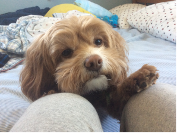
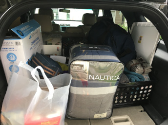
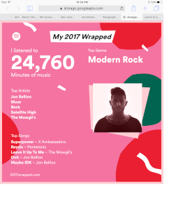

My dog Roxy is a brat. She's a cocker spaniel, poodle mix, and she's got a tiny body with a big personaility. She loves picking fights with bigger dogs that would inevitably eat her if we, her owners, didn't stop her. She also claims her bed as her territory and gets uncomfortable when people invade her space. She's like a cat, in that she likes to be pet, but only when it's done a certain way. What she lacks in her patience, though, she makes up in cuteness. Look at her!
Move!

Now that I'm in college, all I need to live must fit in the back of a car. I always bring my comforter, bluetooth speaker, garbage can, and lots of hoodies. This year, my newest addition to the college pile is an artistic tapestry of the map of the world. I found it on the Wish app, the hub of all my impulse buys. Next on list from there are some neon lights to hang and some lucky bamboo seeds.
Song!

I listen to alternative rock, but I'm constantly trying to expand my music taste. Currently, my favorite artists include Muse, Hobo Johnson, AWOLNATION, Watsky, Hozier, Electric Light Orchestra, and Steam Powered Giraffe. I took piano lessons for about 10 years and a couple years of voice lessons on top of that, but I don't really read sheet music anymore. If I want to play something, I try listening to it first and then recreating it on the piano. Chords are more fun than cadences, in my opinion.